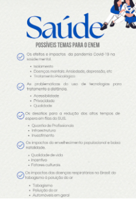

Temas para redação do enem
Os desafios dos longos tempos de espera para cirurgias e transplantes de órgãos no SUS.

Argumento de autoridade
Argumento histórico
Argumento de exemplificação
Argumento de comparação
Argumento de raciocínio lógico
Argumento de causa e consequência